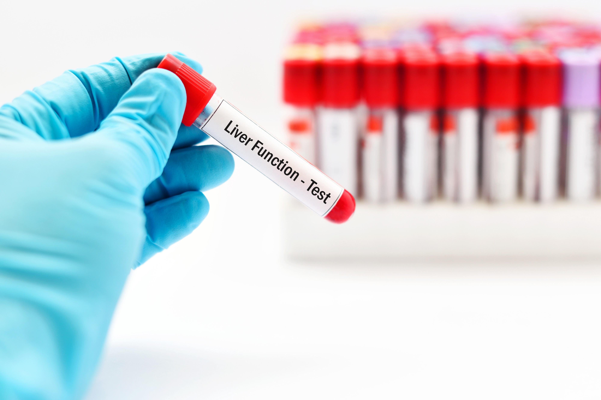

<!-- First Content Start from here -->
<div class="main-content">
    <div class="container">
        <div class="row">
            <div class="col-md-4">
                <h3 style="font-family: Cambria, Cochin, Georgia, Times, 'Times New Roman', serif;color: #000;">Blood
                    Sugar Test Profile</h3>
                <hr>
                <p style="color: #000;">As Known as <b>Fasting Blood Sugar (FBS)</b> </p>

                <p style="color: black;"> &#9989; Certified Labs</p>
                <p style="color: #000;"> &#9989; Home Sample Collection</p>
                <p style="color: #000;"> &#9989; Reports Guaranteed with in 24 hrs</p>
                <p style="color: #000;"> &#9989; Digital Reports</p>
            </div>

            <div class="col-md-6">

                
                <hr>
            </div>


            <div class="col-md-4">

            </div>

            <div class="col-md-6">
                <h4 style="font: normal; color: #000;">₹400</h4>
                <p>Pay via cash or <b> Digitally</b></p>
                <button type="button" class="btn btn-outline-secondary">Add in Cart</button>
                <button type="submit" class="btn btn-info" (click)="onPageLoad()">Book Now</button>
                <hr>
            </div>

            <div class="col-md-4">

            </div>

            <!-- Next Content Start from Here -->
            <div class="col-md-8">
                <h3 style="font-family:'Times New Roman', Times, serif; color: #000; font: normal; margin-left: 55px;">
                    Why Book With Us ?</h3>
                <hr>
                <div class="header">
                    
                    <h4 style="font-family:'Times New Roman', Times, serif; color: #000; font: normal; ">Free Home
                        Sample Collection</h4>
                    <br>
                    <p style="color: #000;"> A certified professional will collect your sample from a location of<br>
                        your preference.</p>
                </div>
                <hr>
                <div class="header">
                    
                    <h4 style="font-family:'Times New Roman', Times, serif; color: #000; font: normal;  ">
                        Digital reports</h4>
                    <br>
                    <p style="color: #000;"> Get the reports right in your mailbox within 24 hours. You will be<br>
                        notified
                        of the tests requiring more time for investigation and <br> report generation..</p>
                </div>

                <hr>
                <div class="header">
                    
                    <h4 style="font-family:'Times New Roman', Times, serif; color: #000; font: normal;  ">
                        Offers and affordable prices</h4>
                    <br>
                    <p style="color: #000;">Get great discounts and offers on tests and packages..</p>
                </div>

            </div>
            <!-- Next Phase regarding the test -->

            <div class="col-md-4">

            </div>

            <div class="col-md-8">
                <mat-accordion>
                    <mat-expansion-panel (opened)="panelOpenState = true" (closed)="panelOpenState = false">
                        <mat-expansion-panel-header>

                            <mat-panel-title style="color: #17a2b8; text-align:center;">
                                What is this Test...?
                            </mat-panel-title>

                        </mat-expansion-panel-header>
                        <p>Blood samples are generally used to screen for diabetes. Your doctor will order a fasting
                            blood sugar (FBS) test. This test measures your blood sugar levels, or a glycosylated
                            hemoglobin, also called a hemoglobin A1C test. The results of this test reflect your blood
                            sugar levels over the previous 90 days...</p>

                        <h5 style="color: black; font: bold;">Fasting BLood Sugar tests include the following tests:
                        </h5>
                        <p> &#10066;The HbA1c test, also known as the haemoglobin A1c or glycated haemoglobin test, is
                            an important blood test that gives a good indication of how well your diabetes is being
                            controlled. Together with the fasting plasma glucose test, the HbA1c test is one of the main
                            ways in which type 2 diabetes is diagnosed.</p>

                        <p> &#10066; A random blood sugar test checks your blood glucose at a random time of day. A
                            level of 200 mg/dL or higher is a sign that you have diabetes..</p>

                        <p> &#10066; Complete Blood Count (CBC) is a blood test that measures Red blood cells (RBC),
                            White blood cells (WBC), Platelets (PLTs), Hemoglobin (Hb), and Hematocrit (Hct) in the
                            blood. This test is used to determine the overall health and screen for any diseases that
                            affect the blood cells.</p>

                        <p> &#10066; A creatinine blood test measures the level of creatinine in the blood. Creatinine
                            is a waste product that forms when creatine, which is found in your muscle, breaks down.
                            Creatinine levels in the blood can provide your doctor with information about how well your
                            kidneys are working.</p>


                        <h5 style="color: black; font: bold;">Why this test is performed ?</h5>
                        <p>Glucose, a sugar, is one of the body's main sources of energy. For people with diabetes, a
                            home test helps monitor blood sugar levels. Taking a blood sugar test can help determine
                            your blood sugar level to see if you need to adjust your diet, exercise, or diabetes
                            medications.</p>
                    </mat-expansion-panel>
                    <br><br>
                </mat-accordion>

                <mat-accordion>
                    <mat-expansion-panel (opened)="panelOpenState = true" (closed)="panelOpenState = false">
                        <mat-expansion-panel-header>

                            <mat-panel-title style="color: #17a2b8; text-align:center;">
                                Test Preparation
                            </mat-panel-title>

                        </mat-expansion-panel-header>
                        <p>For a fasting blood glucose test, you can't eat or drink anything but water for eight hours
                            before your test. You may want to schedule a fasting glucose test first thing in the morning
                            so you don't have to fast during the day. You may eat and drink before a random glucose
                            test....</p>
                    </mat-expansion-panel>

                </mat-accordion>

            </div>


        </div>
    </div>
</div>